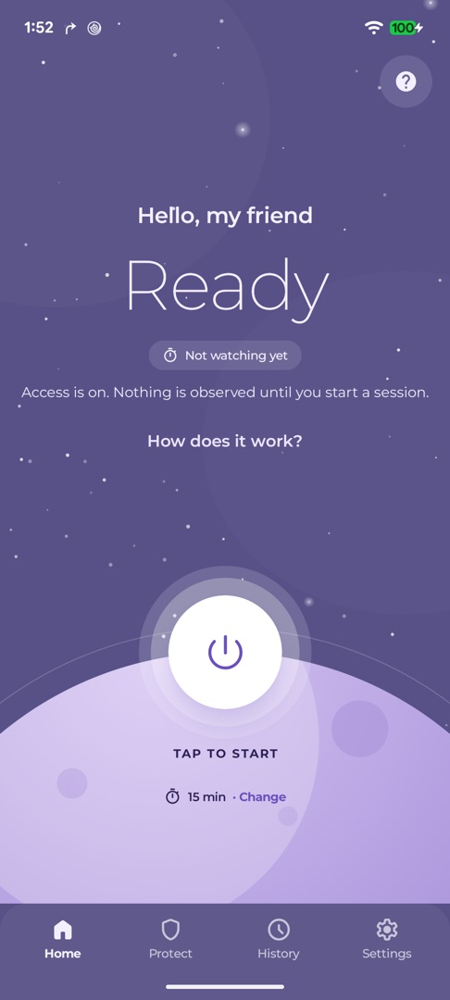
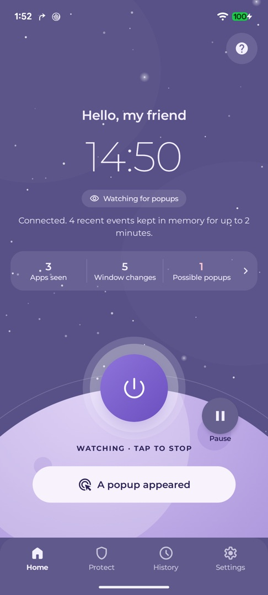
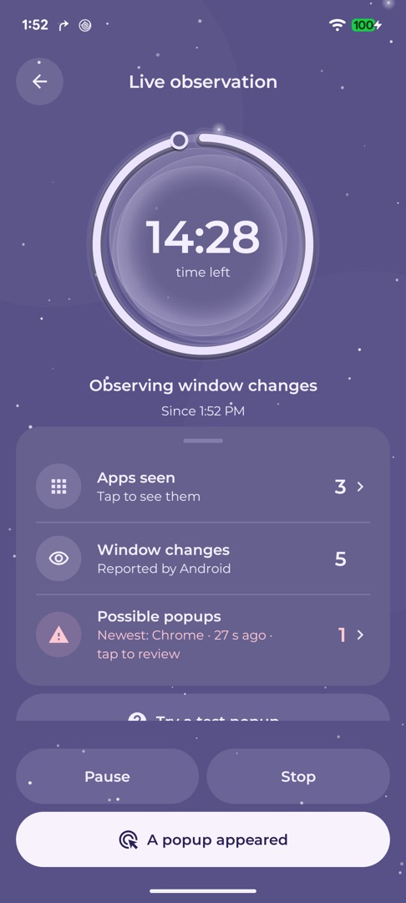
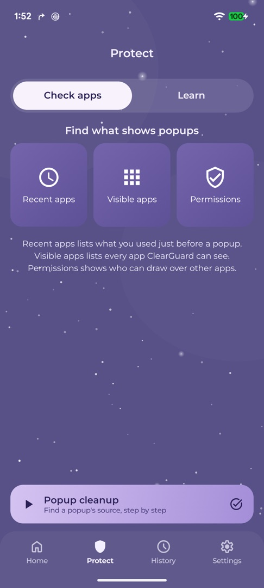
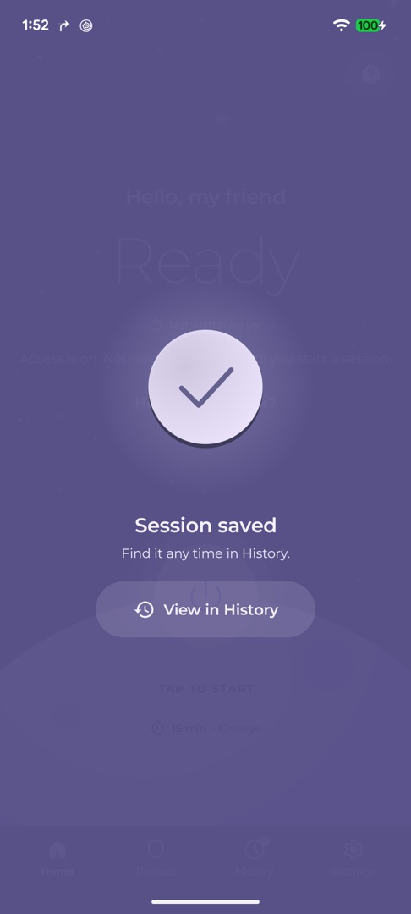
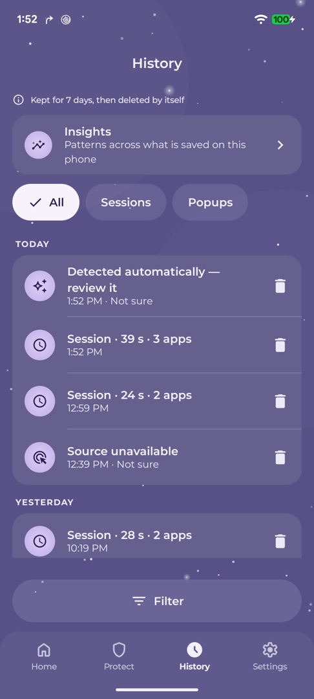

Popup source finder for Android
Which app is behind that popup?
Start a short session, mark the popup when it appears, and see which app brought a window to the front at that moment. Everything stays on your phone.

- No internet permission
- Encrypted on device
- Auto-deleted after 7 days
- No ads or tracking
The idea
What ClearGuard does
Some popups cover your screen without saying which app sent them. During a session you start, ClearGuard notes which app brought a window to the front, and when. Mark a popup and it lists the apps that had a window event at that moment.
Evidence, not a verdict
A result is something to review, not proof that an app showed an ad. Many overlays and ads inside apps or web pages report nothing to Android. When ClearGuard cannot tell, it says "Source unavailable" and why.
Three steps
How it works
-
Step 1
Start a session
One tap starts a 15-minute session. Tap "Change" for 5, 30 or 60 minutes or 2 hours. ClearGuard observes only while a session runs.
-
Step 2
Mark the popup
Tap the floating bubble, the Quick Settings tile, the notification or the widget. Automatic detection can also save a possible popup for you.
-
Step 3
Review the evidence
See the possible source, or why it is unknown. Open Android's App info and decide yourself. ClearGuard never uninstalls or taps for you.
Stopping a session saves it to History automatically ("Session saved"). A session that saw no app changes saves nothing.
Privacy first
Private by design
Works offline
No account, analytics, ads or crash reporting. No internet permission at all.
Encrypted on your phone
Records are encrypted with a key in Android's secure key storage, and kept out of cloud backup.
You start every session
Switching ClearGuard on starts nothing. It stops when you stop, when time is up, or when the screen turns off.
No screen content
Only the app's package name, the event type and the time. Never text, messages, passwords or screenshots.
Deleted automatically
After 7 days by default (or 1 or 30). Delete one record, all history, or reset any time.
Honest about limits
No accuracy scores, no "your phone is safe", no "malware" labels. Unknown means unknown.
Read the privacy policy, permissions explained and how to delete your data.
A look inside
Screenshots





Questions
Frequently asked questions
Does ClearGuard block or remove ads?
No. ClearGuard does not block ads, change other apps, or uninstall anything. It shows you which app may be behind a popup and opens Android's App info screen for an app you choose. There you decide whether to uninstall, disable, or change its permissions, and Android asks you to confirm.
Why does it need the Accessibility service?
Android only tells an app which other app brought a window to the front through the Accessibility service. ClearGuard asks for the narrowest form: window-change events only, with no access to window content, no gestures and no screenshots. It is not an accessibility tool for people with disabilities. You see a separate explanation and agree to it before ClearGuard asks Android for anything. See permissions explained.
Can it see my messages, passwords or what I type?
No. ClearGuard's Accessibility settings turn off window-content access, so Android does not give it screen text. It only receives three things about each window-change event: the app's package name, the event type and the time.
Does it send anything to the internet?
No. ClearGuard has no internet permission, no account, no analytics, no advertising and no crash reporting. If you choose "Save report", the file goes only where you pick in Android's file picker.
Will it always find the app?
No, and it will tell you so. Full-screen popups that open as their own window often report an app. Ads inside an app or a web page usually belong to the app you are using, and many overlays drawn on top of other apps report nothing. ClearGuard also cannot see popups from before a session started. For website notifications and lock-screen ads, the in-app Guides explain other steps.
Does it run in the background all the time?
No. Nothing is observed outside a session you start, and a session lasts at most 2 hours. Turning the screen off interrupts it. An optional reminder (off by default) can nudge you to start a session, but it never starts one by itself.
How do I delete my data?
In History, tap a record's bin button or swipe it away (you get 5 seconds to Undo), or open it and tap Delete. You can also use Settings → Delete all history, or Settings → Reset ClearGuard. Records also delete themselves after the period you choose, and uninstalling removes everything. There is no account and nothing on our side to delete. See data deletion.
Which Android versions are supported?
Android 8.0 (API level 26) and newer.